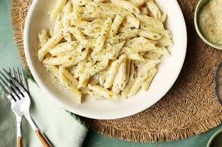

Creamy Garlic Penne Pasta

Description
This is a delicious, super quick side or main dish. I got it from the back of a pasta box and it is yummy!
Ingredients
- (1 lb) box penne or (1 lb) box penne rigate, cooked as directed, drained and kept hot
- 2 tablespoons butter or 2 tablespoons margarine
- 2 garlic cloves, minced
- 2 tablespoons flour
- ¾ cup chicken broth
- ¾ cup milk
- 2 teaspoons parsley flakes
- salt and pepper, to taste
- ¾ cup grated parmesan cheese
Step by Step
- Melt butter and add garlic in a medium sauce pan.
- Cook over medium for 1 minute.
- Add flour and cook 1 minute, stirring constantly.
- Stir in broth and milk and cook, stirring frequently, until sauce boils and thickens.
- Add parsley, salt, pepper and cheese.
- Stir until cheese is melted.
- Toss hot pasta with sauce and serve immediately.